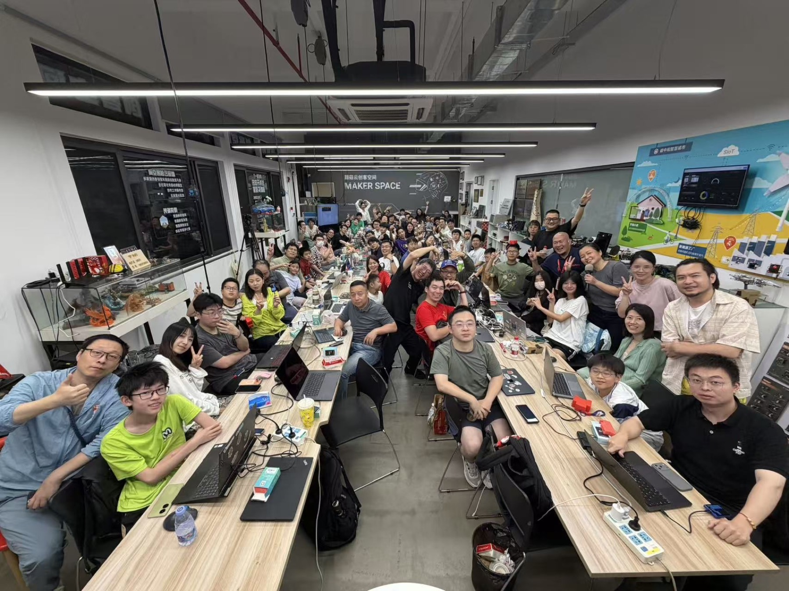
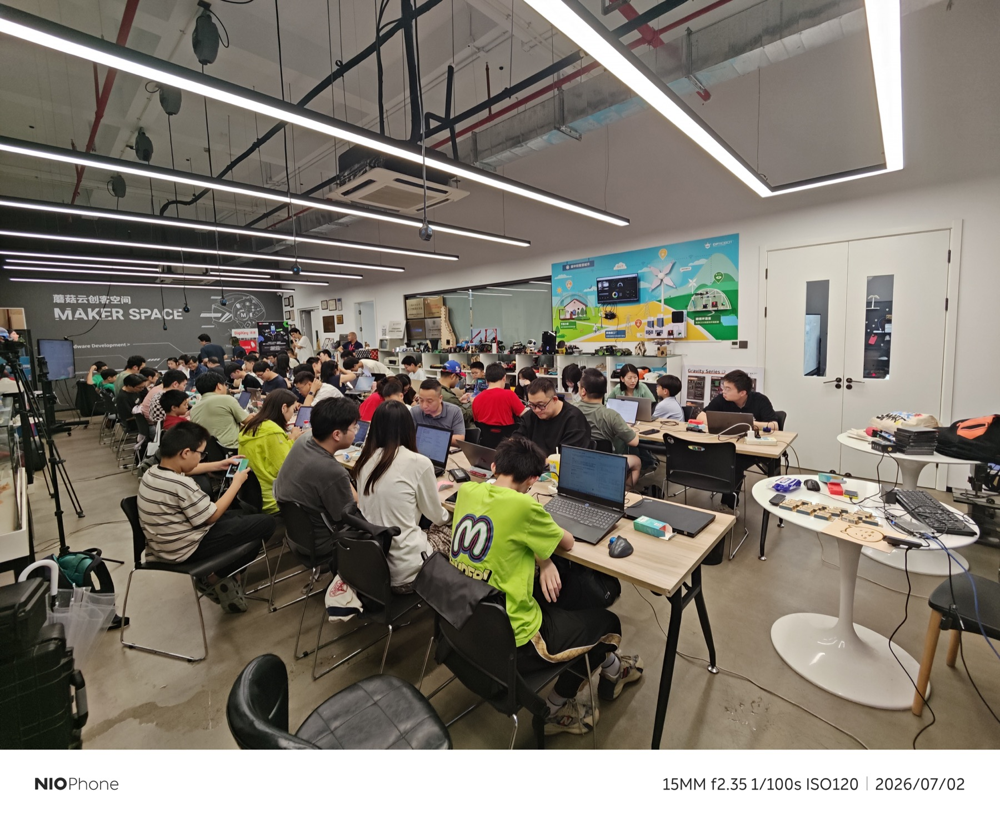
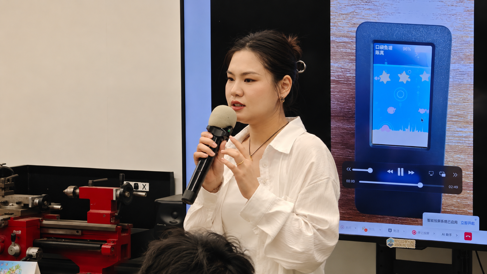

鱼的数量、成长、夜光和被捕获的状态会保留，不会每次刷新都从头开始。
Soft + Hardware Prototype · Product Evolution Record
口袋鱼塘 Pocket Fish Pond
这是一个软硬件结合的产品原型：硬件负责呈现，小程序式的规则和状态负责驱动演化。 它从《小王子》风格的叙事起步，最终转向更适合小屏表达的“口袋鱼塘”，用繁衍、投喂、 夜光、捕捞和生态整理，验证一个会持续长出来的小世界。
Project Question
如何把一个模糊的想法，推进成可以被拿在手里、持续演化的真实作品？
口袋鱼塘最重要的价值，不是工业级复杂度，而是从想法、硬件约束、交互机制到软件规则、 运行原型的完整闭环。
它证明我不只会描述 AI Native 的概念，也能把一个小但真实的念头推进到可以被拿在手里体验的状态。
Memory Aquarium
它不只是一个会动的鱼缸，也是一个会记住过程的水族箱。
我昨天提到的“记忆水族箱”，核心不是再加一层装饰，而是让这个设备把过程保留下来： 鱼会因为繁衍、投喂、夜光、捕鱼而改变状态，现场分享、照片和视频也会成为项目经历的一部分。 这样它就不只是一个播放动画的屏幕，而是一个能够持续记录、持续生长的个人作品容器。
繁衍、投喂、捕鱼这些动作不是单点效果，而是可以持续积累的演化痕迹。
现场照片、视频和分享经历把这个作品从屏幕里的演示，变成了真实被看见的经历。
Project Origin
起点并不是鱼塘，而是一个更难落地的《小王子》式软硬件互动原型。
最初的目标很直接：让 M5Stack Stick S3 的屏幕、按键、IMU、麦克风、喇叭、电池和 Wi-Fi 全部参与进来，做成一个能持续变化的小世界。很快发现《小王子》方向叙事感强，但画面复杂， 和小屏设备的体量不匹配，也不够承载后续状态和规则。
于是主题转向海底鱼缸。鱼的运动更适合短屏幕，状态变化能直接体现在数量、颜色和体型上， 交互也更容易围绕“生长、喂食、惊吓、捕捞”这样的生态行为展开。
Why It Changed
鱼塘比小王子更适合软硬件联动，也更适合做养成和状态反馈。
鱼塘主题的判断非常明确：鱼的运动天然适合短屏幕，状态变化可以直接体现在鱼的数量、颜色、 体型和夜光倾向上。小屏不适合复杂叙事，但很适合高反馈的养成和状态切换。
这也让“口袋鱼塘”成为最终命名方向，并逐步统一成一个更清晰的产品身份，而不是停留在“电子动画”阶段。
Evolution Record
从环境搭建到状态机闭环，这个项目是一步步长出来的。
01
开发环境
先打通 Arduino IDE、ESP32 板卡、串口、M5Unified 和 M5GFX，确认设备真的能跑起来。
02
第一版验证
先确认屏幕、按键、USB 供电和唤醒是否正常，把硬件链路打通，再谈效果。
03
繁衍与投喂
短按生鱼、短按投喂，鱼的成长跨状态保留，项目从动画转向养成系统。
04
夜光与水体
从发光圈收成统一荧光感，让水体、水面和鱼的颜色更像一个活的生态，而不是特效堆叠。
05
捕鱼与压力
鲨鱼和捕鱼从演出变成生态压力，形成“繁衍 - 投喂 - 观赏 - 捕捞 - 再繁衍”的闭环。
06
当前判断
这个项目最终证明的是：好的硬件原型不是把功能堆满，而是把体验、状态和演化讲清楚。
Core Loop
鱼塘真正重要的，不是模式切换，而是鱼在持续积累。
短按一次，鱼塘长出一条鱼；小鱼会保留在缸里，不会因为切换状态消失。
一次投喂 5 粒，食物分散掉落，小鱼吃到后会成长，成长会跨状态保留。
统一荧光绿/蓝、压暗水体、去掉外圈光晕，让夜光更干净、更有对比。
捕鱼拆成撒网、捕获、收网三段，最后回到繁衍，让流程有开场、有过程、有收束。
External Validation
这个小原型没有停在我的电脑里，它被真实社区和硬件生态看见了。
口袋鱼塘发布后，M5Stack 厂家点赞了我的小红书内容；蘑菇云创客空间邀请我参加他们组织的活动， 并围绕这个项目做现场分享。它给我的外部力量，是让我确认：一个由兴趣出发的小作品， 也可以成为技术社区里的交流入口。
M5Stack 厂家点赞
项目被硬件生态里的真实参与者看见，证明它不只是一个个人练习，而是能进入创客语境的作品。
创客空间邀请分享
从“自己做出来”走到“向别人讲清楚”，让我验证了表达、演示和产品复盘能力。
现场交流带来的信心
面对真实创客、开发者和产品兴趣者，项目变成了一个能被讨论、被提问、被继续延展的载体。



Outcome
这个项目体现的不是“会做小玩具”，而是把一个小世界做完整的能力。
- 把一个模糊想法拆成设备、交互、状态、反馈和长期资产。
- 在小屏硬件限制下判断哪些功能应该保留，哪些应该交给 CC 或云端。
- 用可运行原型验证想法，并获得 M5Stack 厂家点赞、创客空间分享邀请和真实现场交流。